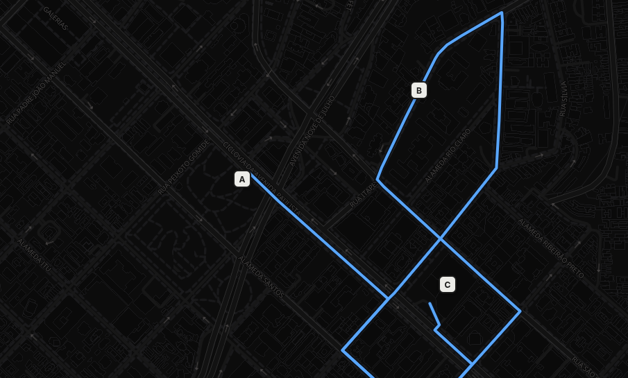

Marque a partida e o destino no mapa. O aparelho conectado anda pela rota, pelas ruas, quatro posições por segundo, e todo app nele recebe essa localização: o seu, o Maps, qualquer um. Nada é instalado no celular.
Como rodaradb shell cmd location providers …, também para network e fused).Três passos, sempre nesta ordem.
Clique no mapa ou busque um endereço. A, B, C… cada ponto com tempo de parada (retirada na loja, entrega).
Carro/moto, bicicleta ou a pé, calculada no OSRM. Ou linha reta, para testar o caso sem estrada.
O relógio da simulação roda no servidor: fechar a aba não atrasa nada. Parar devolve o GPS real.

Tudo muda na hora, com a simulação andando.
Cada tipo de aparelho recebe a posição pelo caminho oficial dele.
| Aparelho | Como a posição chega | Precisa de |
|---|---|---|
| Android físico | Provedores de teste gps, network e fused via adb shell cmd location | Android 12+, depuração USB (cabo ou Wi-Fi) |
| Emulador Android | adb emu geo fix: GNSS emulado, não aparece como mock | Emulador ligado |
| Simulador iOS | xcrun simctl location | macOS com Xcode 14+ |
| iPhone físico | Exporte o cenário em GPX e use no Xcode (Debug › Simulate Location) | Xcode; a Apple não permite por app |
Sem cabo: com o cabo ligado uma vez, Passar para Wi-Fi faz o adb tcpip. Sem cabo nenhum, pareie pelo código de “Depuração por Wi-Fi” do celular.
Cenários são JSON em scenarios/: dá para versionar, revisar em PR e rodar no CI.
# aparelhos conectados e se estão prontos pnpm sim devices # roda um cenário 5× mais rápido no aparelho escolhido pnpm sim run scenarios/exemplo-entrega.json --device <id> --scale 5 # devolve o GPS real se algo travou no meio pnpm sim reset <id>
Location.isMock() retorna true. Apps que bloqueiam localização falsa recusam; no emulador não acontece.cmd location não aceita esses campos; o app calcula pela sequência de pontos. No emulador a velocidade vai junto.pnpm sim reset <id> ou reiniciar. Ctrl+C limpa sozinho.127.0.0.1 e recusa comandos vindos de outros sites.routing.openstreetmap.de e Nominatim (1 busca/s). Troque por servidores seus com GPS_SIM_OSRM_URL e GPS_SIM_NOMINATIM_URL.cd gps-simulator
pnpm install
pnpm dev # http://127.0.0.1:4600
Roda só neste computador. Para o GPS voltar ao normal, é só apertar Parar.